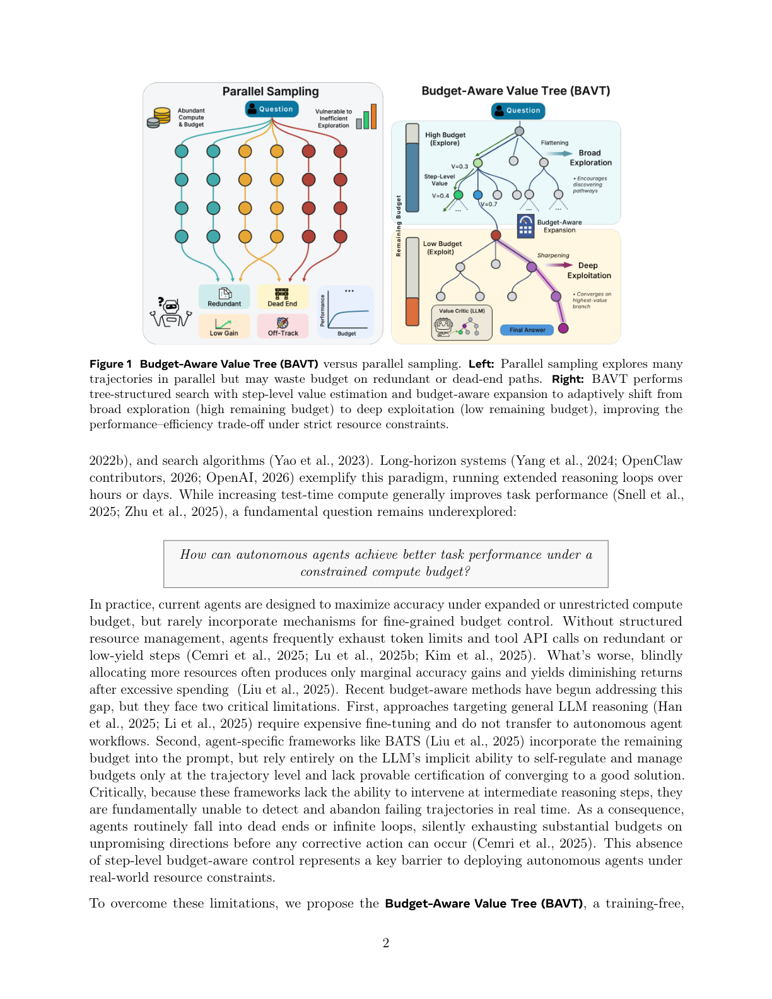
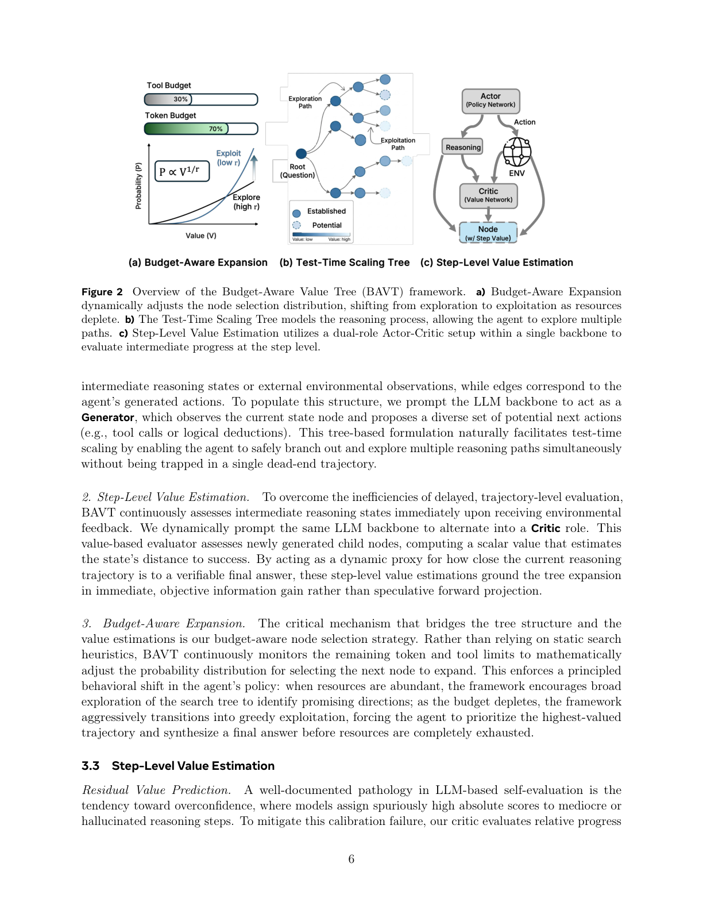
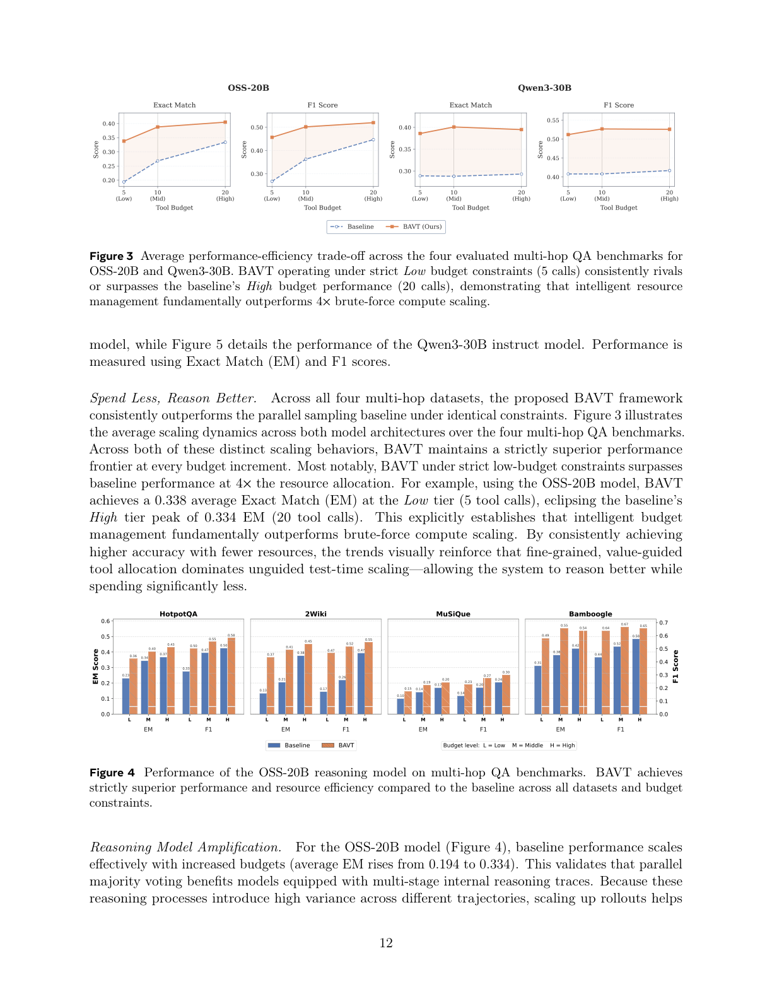
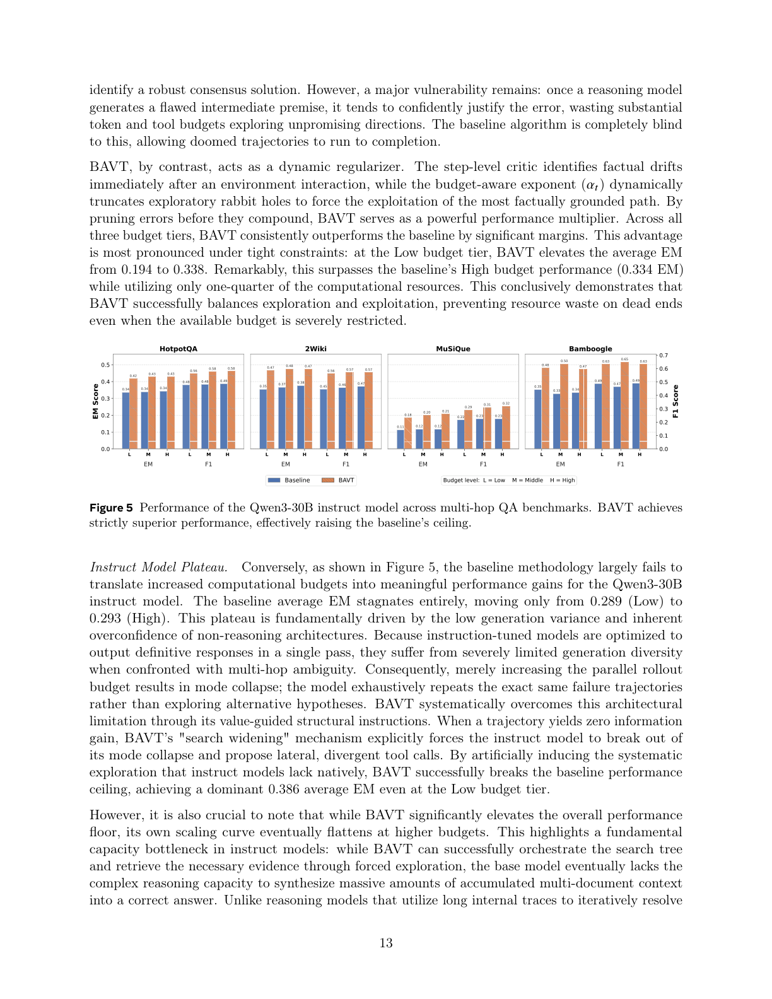
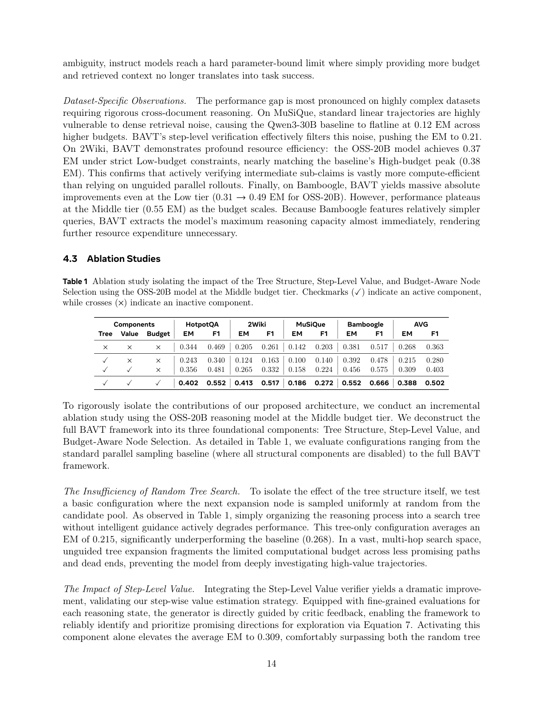

在无训练、推理期即可运行的框架，以步级价值估计与预算条件化节点选择实现「探索→利用」的自动切换
测试时扩展（test-time scaling）已成为提升 LLM 智能体可靠性的主导范式，但现有方法将计算视为充裕资源，允许智能体在冗余步骤或死胡同轨迹上耗尽 token 与工具预算。已有的预算感知方法要么需要昂贵的微调，要么依赖粗粒度、轨迹级的启发式，无法在执行中途干预。我们提出 预算感知价值树（Budget-Aware Value Tree, BAVT）——一个无训练、推理期框架，将多跳推理建模为单一 LLM 主干上、由步级价值估计引导的动态搜索树。另一关键创新是预算条件化节点选择机制：它以剩余资源比例为节点价值的自然缩放指数，在预算耗尽时提供从广泛探索到贪婪利用的、有原则且无参数的过渡。为对抗 LLM 自评估众所周知的过度自信，BAVT 采用残差价值预测器，对相对进展而非绝对状态质量打分，从而可靠地剪除无信息或冗余的工具调用。我们进一步给出理论收敛保证，证明 BAVT 在显式有限预算下以至少 $1-\epsilon$ 的概率到达终止答案。在跨两个模型族的四个多跳 QA 基准上的大量评估表明，BAVT 持续优于并行采样基线；最引人注目的是，在严格低预算约束下，BAVT 超越了分配 4 倍资源的基线性能，确立了「智能预算管理从根本上优于暴力算力扩展」。

外部工具的集成已将 LLM 从被动的文本生成器转变为能够在复杂环境中收集信息、执行任务的自主智能体。为提升在困难多跳推理任务上的可靠性，近期工作日益依赖测试时扩展——通过反思、并行采样与搜索算法在推理时分配额外的计算资源。长程系统（如 OpenAI 的长时间推理循环）体现了这一范式。尽管增加测试时算力通常能提升任务性能，一个根本问题仍未被充分探索：自主智能体如何在受限的计算预算下取得更好的任务性能？
实践中，当前智能体被设计为在扩展或无限制预算下最大化准确率，却鲜少内建细粒度预算控制机制。缺乏结构化资源管理时，智能体频繁在冗余或低收益步骤上耗尽 token 上限与工具 API 调用；更糟的是，盲目分配更多资源往往只带来边际准确率提升与递减回报。近期的预算感知方法开始填补这一空白，但存在两个关键局限：第一，面向通用 LLM 推理的方法（Han et al., 2025; Li et al., 2025）需要昂贵的微调，无法迁移到自主智能体工作流；第二，智能体专用框架（如 BATS）虽将剩余预算纳入提示，却完全依赖 LLM 隐式自我调节、且只在轨迹级管理预算，缺乏对收敛到好解的可证明保证。关键的是，由于这些框架无法在中间推理步骤干预，它们从根本上无法实时检测并放弃失败轨迹——智能体常常陷入死胡同或无限循环，在采取任何纠正动作前就于无望方向上默默耗尽大量预算。这种步级预算感知控制的缺失，是现实资源约束下部署自主智能体的关键障碍。
为克服这些局限，我们提出 BAVT——一个无训练、在单一 LLM 主干上统一树状结构化搜索、步级价值估计与自适应预算控制的推理期框架。BAVT 将推理过程建模为动态搜索树，节点代表中间状态、边对应动作或工具调用。我们引入了评估每步相对进展的步级价值评论家（step-level value critic），它预测残差价值增量（score 边际信息增益而非绝对状态质量），从而可靠剪除无信息分支。BAVT 的另一关键创新是预算条件化节点选择机制：用基于幂的缩放函数将节点价值转为采样分布，指数取剩余预算比例的倒数——预算充裕时促进广泛探索，预算耗尽时聚焦高价值分支，提供无参数的探索→利用过渡。我们进一步给出理论收敛保证。在四个多跳 QA 基准、两个模型族、三档预算上的评估表明 BAVT 持续优于并行采样基线；最显著地，严格低预算下的 BAVT 超越了 4 倍资源分配的基线，确立了智能预算管理的根本优势。
本文贡献：(1) 面向测试时扩展的预算感知树搜索：在严格的 token 与工具调用约束下形式化问题，将推理建模为支持细粒度、步级资源分配的动态搜索树；(2) BAVT：带理论保证的无训练框架：含缓解 LLM 过度自信的残差价值评论家，以及预算条件化节点选择机制，并证明其在显式有限预算下收敛到终止答案；(3) 少花冤枉钱，推理更出色：在四个多跳 QA 基准上，BAVT 在每个预算档都取得更优的性能—效率权衡，低预算 BAVT 优于高预算基线。
外部工具的集成显著推进了 LLM 能力，使其从静态文本生成器转变为能与动态环境交互的主动智能体。ReAct、Toolformer、WebGPT 等基础框架证明了交错推理轨迹与工具动作以求解复杂查询的有效性。近期的 LangChain 等编排框架与 Inspect AI、OctoTools 等评估工具包标准化了这些多跳智能体的部署与测试。尽管近期基于 RL 的方法尝试在训练中直接优化工具使用，却常面临严重不稳定与高计算开销，因此部署中的智能体通常依赖假设无限资源的朴素自主循环，频繁陷入昂贵的死胡同。
为克服线性解码的局限，近期文献系统性地转向测试时扩展——在推理时分配更多计算资源以最优地提升推理鲁棒性。Self-Consistency、Tree of Thoughts (ToT)、Graph of Thoughts (GoT)、Language Agent Tree Search (LATS) 等将推理过程形式化为大状态空间上的搜索问题。近期进展还探索动态优化搜索空间的几何（如自适应平衡「更宽」或「更深」），并借鉴强化学习的 actor-critic 范式，以反思机制与基于提示的评论家充当评估中间状态的价值函数。然而，这些基于搜索与价值引导的算法 predominantly 以准确率为驱动、且假设计算资源无界，普遍缺乏惩罚昂贵动作或依资源耗尽调整搜索几何的内在机制。
随着部署 LLM 的经济与计算成本成为关键瓶颈，预算感知推理这一子领域兴起。早期策略（模型级联、EcoAssistant 路由）通过将查询导向更便宜的模型来降本。近期工作探索面向通用 LLM 推理的动态资源分配，但大多局限于静态、闭卷问题而非多跳智能体工作流，且通常依赖昂贵的事后训练来对齐模型策略与资源约束。自主智能体因迭代环境交互（如网页搜索）的高昂财务成本而独具挑战；BATS 框架显式限制工具使用，理论工作识别了严格多智能体约束下的性能相变。但现有智能体框架主要用粗粒度启发式或轨迹级干预管理资源，仅在完整序列失败后才评估成本或依赖僵化的提示警告。相比之下，BAVT 引入细粒度、步级价值评估，随预算缩减以数学方式将策略从广泛探索切换到贪婪利用。
我们研究在硬预算约束下、工具增强 LLM 智能体的测试时扩展。给定用户问题 $x$，智能体与环境交互并执行中间推理步骤，最终产生答案 $\hat{y}$。目标是在严格满足预定义预算的同时最大化答案正确性。我们将此形式化为资源约束的确定性决策过程，由元组 $(S, A, T, B, C)$ 定义：
状态空间 $S$：状态 $s_t$ 封装智能体可用全部上下文（初始问题、历史动作、内部推理轨迹、环境观察）。动作空间 $A$：动作 $a_t$ 包含内部推理生成与外部工具调用。转移动态 $T$：确定性转移 $s_{t+1}=T(s_t,a_t)$，将新动作及其观察追加到上下文。预算状态空间 $B$：预算不仅是静态约束，而是动态状态空间 $B\subseteq\mathbb{Z}_{\ge0}\times\mathbb{Z}_{\ge0}$，追踪推理过程中的剩余资源，由初始工具预算 $B_{\text{tool}}$ 与初始 token 预算 $B_{\text{token}}$ 界定；可用预算 $b_t=(b^{\text{tool}}_t,b^{\text{token}}_t)$ 初始化为 $b_0=(B_{\text{tool}},B_{\text{token}})$。代价函数 $C$：每步动作代价 $C(a_t)=(C_{\text{tool}}(a_t),C_{\text{token}}(a_t))$，其中工具代价成功调用为 1、否则为 0，token 代价为该步生成的输出 token 数。预算迭代更新：
展开为分量更新：$b^{\text{tool}}_{t+1}=b^{\text{tool}}_t-C_{\text{tool}}(a_t)$，$b^{\text{token}}_{t+1}=b^{\text{token}}_t-C_{\text{token}}(a_t)$。搜索目标：轨迹 $\tau=(s_0,a_0,s_1,\ldots,s_T)$ 是由转移函数诱导的状态—动作序列；测试时扩展对应于以 $s_0$ 为根的树上信息性搜索，优化搜索策略 $\pi$ 以探索竞争分支、识别最大化期望正确性的终止答案 $\hat{y}$。这一设定激励基于搜索的解法，在竞争分支间做细粒度预算分配，而非锁定单一线性轨迹。
BAVT 是一个无训练架构，从根本上将智能体推理重构为三大支柱（图 2）：
1. 测试时扩展树。 将多跳推理建模为专为推理期扩展算力设计的动态搜索树，节点代表中间推理状态或环境观察，边对应生成的动作。我们提示同一 LLM 主干充当 Generator，观察当前状态节点并提出一组多样的可能下一步动作（工具调用或逻辑推演），使智能体能安全分叉、同时探索多条推理路径而免于陷入单一死胡同。
2. 步级价值估计。 为克服延迟的、轨迹级评估的低效，BAVT 在收到环境反馈后立即持续评估中间推理状态。我们动态提示同一主干切换为 Critic 角色，计算估计状态到成功距离的标量价值，使步级价值估计立足于即时、客观的信息增益而非推测性前向投影。
3. 预算感知扩展。 将树结构与价值估计桥接的核心机制：BAVT 持续监控剩余 token 与工具上限，以数学方式调整选择下一扩展节点的概率分布——资源充裕时鼓励广泛探索，预算耗尽时激进度切换到贪婪利用，迫使智能体在资源完全耗尽前优先最高价值轨迹并综合最终答案。

残差价值预测。 LLM 自评估的已知弊病是过度自信，对平庸或幻觉的步骤赋予虚高的绝对分数。为缓解这一校准失败，我们的批评家评估相对进展而非绝对状态质量：预测反映最近动作边际效用的残差分（信息增量 $\Delta_t$）。令 $V(n)$ 为父节点价值，新生成子节点 $n'$ 的更新价值为：
其中 $\Phi(\cdot)$ 是将价值限制在归一化范围的边界函数。通过锚定于相对增量，价值函数更可靠地捕捉真实的推理进展轨迹，并激进地惩罚冗余或无信息的工具执行。
价值引导的步级指令。 这些步级价值直接决定搜索树的拓扑扩展。令 $\tau$ 为终止的预定义置信阈值：答案生成（$V(n')\ge\tau$）：证据充足，指示模型终止当前路径并综合最终答案；搜索拓宽（$V(n')\le V(n)$）：最近动作零或负信息增益，为避免停滞，智能体横向探索、提出分歧思路或工具调用；搜索深化（$V(n)<V(n')<\tau$）：动作有正信息增益但未达终止阈值，分支有前景，指示模型通过后续推理深化搜索。这一结构引导确保智能体在前景链的「深度优先利用」与不确定路径的「广度优先探索」间高效交替。
搜索的核心机制是动态、预算感知的节点选择策略。搜索树以原问题为根节点（赋最小起始价值）初始化；每步从候选节点池中（严格排除终止答案节点）采样一个扩展节点。
从探索到利用的切换。 标准 UCB 公式适合渐近探索但假设无界视野，无法适应严格、递减的资源约束。我们引入预算感知的随机采样机制：令 $r_t\in(0,1]$ 为第 $t$ 步的有效剩余预算比例，取剩余工具预算比例与剩余 token 预算比例的最小值：
动态缩放指数 $\alpha_t$ 与该限制预算比例成反比：$\alpha_t=1/r_t$。对每个候选节点 $n_i$ 及其累积状态价值 $V(n_i)$，用基于幂的缩放函数计算未归一化选择权重 $w_{n_i}=V(n_i)^{\alpha_t}$，选择概率由全池归一化得到：
该形式诱导出预算依赖的行为切换：预算充裕（$r_t\approx1$）时 $\alpha_t\approx1$，分布约正比于原始节点价值、促进探索；预算下降（$r_t\to0$）时 $\alpha_t$ 增大，放大价值差异、将概率质量集中于高价值节点；极限下分布趋近于近确定性的最高价值节点选择。于是策略从早期广泛探索随资源稀缺过渡到日益利用。
节点扩展与全局反向传播。 选定节点 $n$ 后，生成器合成与环境交互的动作，产生新观察并创建子节点 $n'$，提示式批评家立即评估该新状态赋予初值 $V(n')$。一旦生成首个终止答案节点，框架触发整树的全局价值更新；此后每步，节点 $n$ 的总体价值自底向上递归更新：
该规则中分子里的 $V(n)$ 依赖节点原始的、未修改的批评家评估，通过纳入下游分支的经验成功来平滑初始局部分数，确保导向多个强候选答案的路径优先于孤立的高价值节点。
为最大化探索并确保最高质量响应，搜索过程通常避免一旦发现单一有效轨迹就提前终止，而是持续运行以探索替代推理路径，直到触及硬预算约束。
预算兜底机制。 为保证严格资源约束下的有效输出、防止灾难性失败，我们引入抢先的强制生成机制：若搜索中智能体完全耗尽工具预算（$b^{\text{tool}}_t=0$），或剩余 token 预算比例低于临界阈值 $\eta$（$b^{\text{token}}_t/B_{\text{token}}\le\eta$）且尚未成功生成至少一个候选终止答案（答案集 $A=\varnothing$），框架立即中止标准扩展，选取累积价值最高的不完整叶节点 $n^*=\arg\max_{n\in N_{\text{leaf}}}V(n)$，并发布确定性指令强迫生成器仅基于截至该点的上下文与证据综合最终答案。
最终答案提取。 若穷举搜索正常完成（即在绝对预算耗尽前至少一条轨迹成功到达终止答案），框架评估候选答案集 $A$，选取反向传播总体价值最高的终止节点，提取最终预测答案 $\hat{y}$ 直接返回给用户。
我们给出理论保证：在足够大的计算预算下，BAVT 以高概率通过满足生成条件（$V(s_t)\ge\tau$）收敛到终止答案。结果依赖关于搜索空间与评估模型的三个结构性假设（Oracle 轨迹每步有确定最小信息增益 $\Delta_t\ge\delta>0$；边界函数保持可加性且阈值 $\tau<v_{\max}$；候选池大小与价值有界，缩放指数有上界 $\alpha_{\max}$）。由此，采样任意特定节点的条件概率严格下界于 $p_{\min}>0$。
定理 1（到答案生成的概略收敛）。 给定假设 1–3，对任意任意小的失败概率 $\epsilon>0$，存在有限预算界 $B$，使得 BAVT 框架以至少 $1-\epsilon$ 的概率成功生成满足 $V(s_t)\ge\tau$ 的节点。证明要点：沿 Oracle 路径从初态到达阈值至多需 $K=\lceil(\tau-V(s_0))/\delta\rceil$ 步；初始预算 $B$ 保证 $M=\lfloor B/c_{\max}\rfloor$ 次有效扩展步；由假设 3 每步采样到 Oracle 前沿节点的概率下界 $p_{\min}>0$，构造 i.i.d. Bernoulli 序列并用 Chernoff 界，要求 $M\ge\frac{1}{p_{\min}}\big(K+\sqrt{2K\log\frac{1}{\epsilon}+2\log\frac{1}{\epsilon}}\big)$，即可使失败概率 $\le\epsilon$。故框架以至少 $1-\epsilon$ 概率到达终止节点。
数据集。 四个复杂多跳推理基准：HotpotQA、2WikiMultihopQA、MuSiQue、Bamboogle——它们严格需要顺序工具使用与动态信息收集，问题无法仅凭模型参数权重回答，是资源约束交互的理想测试床。模型。 跨两种架构评估以证通用性：GPT-OSS-20B（推理模型）与 Qwen3-30B-A3B-Instruct-2507（指令模型）。基线。 对比并行采样基线（预算约束下的多数投票）：在完全相同资源约束下并发执行 $K$ 条独立轨迹，累计代价耗尽预算 $B$ 后，对全部有效轨迹的答案做多数投票 $\hat{y}=\arg\max_y\sum_{i=1}^K\mathbb{I}(A(\tau_i)=y)$。预算配置。 三档：低（5 次工具调用；推理模型 2000 token / 指令模型 1000 token）、中（10 次；4000/2000）、高（20 次；8000/4000）。实现。 基于 Inspect AI 框架，检索使用 2018 Wikipedia dump 与 E5 稠密检索器（每查询固定 5 段）；两模型分别采用各自官方默认采样超参。
图 3 展示跨四个基准的平均性能—效率权衡：BAVT 在严格低预算（5 次调用）下持续匹敌或超越基线的高预算（20 次调用）性能，确立智能资源管理从根本上优于 4× 暴力算力扩展。例如 OSS-20B 上，BAVT 在低档取得 0.338 平均 Exact Match（EM），超过基线高档峰值 0.334 EM。


推理模型放大效应。 对 OSS-20B（图 4），基线性能随预算提升而有效扩展（平均 EM 从 0.194 升至 0.334），验证了并行多数投票有益于具备多阶段内部推理痕迹的模型；但基线对「推理模型生成错误中间前提后自信地为其辩护、在死胡同上浪费预算」完全盲目。BAVT 充当动态正则化器：步级批评家在交互后立即识别事实漂移，预算感知指数 $\alpha_t$ 动态截断探索性死胡同、强迫利用最 grounding 的路径，在三个预算档都显著优于基线——低档将平均 EM 从 0.194 提升至 0.338，仅用四分之一算力即超越基线高档性能。

指令模型平台期。 对 Qwen3-30B（图 5），基线几乎无法将增加的算力转化为性能增益（平均 EM 从 0.289 仅在 0.293 徘徊），这源于非推理架构的低生成方差与固有过度自信导致的模式坍塌（重复相同失败轨迹）。BAVT 通过价值引导的结构指令，「搜索拓宽」机制强制指令模型跳出模式坍塌、提出横向分歧的工具调用，在低档即取得主导性的 0.386 平均 EM。但需注意 BAVT 自身缩放曲线在高预算也会最终变平——这揭示了指令模型的根本容量瓶颈：其缺乏将海量多文档上下文综合为正确答案的复杂推理能力。
数据集特异性观察。 在需严密跨文档推理的 MuSiQue 上，基线因密集检索噪声而平台于 0.12 EM，BAVT 的步级验证将其推至 0.21；在 2Wiki 上 BAVT 展现极高资源效率（OSS-20B 低预算即达 0.37 EM，近基线高预算峰值 0.38）；在 Bamboogle 上低档即有巨大绝对提升（OSS-20B 0.31→0.49 EM），但因查询较简单，Middle 档即触顶。
我们拆解 BAVT 为树结构、步级价值、预算感知节点选择三组件做增量消融。随机树搜索的不足：仅将推理组织为搜索树而无智能引导反而劣化性能（0.215 EM），因在无引导的多跳大空间中，树扩展将有限预算碎片化到无望路径与死胡同。步级价值的影响：集成步级价值验证器带来剧增（0.309 EM），但缺乏显式预算控制时无法随资源耗尽从探索切换到利用。预算感知节点选择的必要性：激活 $\alpha_t$ 解决这一瓶颈——将选择指数与剩余预算反比绑定，强迫智能体在资源耗尽时激进切换到贪婪利用，将框架推至峰值（0.388 AVG EM），确保验证器识别的高质量轨迹被成功驱动至完成而非被预算耗尽过早截断。
本文形式化了自主智能体推理中资源分配的关键挑战，并提出预算感知价值树（BAVT）以应对无约束测试时扩展的严重低效。通过将多跳推理建模为由 LLM 驱动的步级批评家引导的动态搜索树，BAVT 引入了一种有原则的节点选择机制，随计算预算耗尽将智能体策略从广泛探索无缝过渡到贪婪利用。在四个多跳 QA 基准上的大量评估表明，这一无训练框架持续取得远优于鲁棒并行采样基线的性能—效率权衡；最显著地，严格低预算下的 BAVT 频繁超越标准方法的高预算性能，成功缓解推理模型中的复利错误、并打破指令微调架构固有的模式坍塌平台期。最终，BAVT 为在现实部署所需的严格资源约束下最大化自主智能体可靠性，确立了高效且可适配的范式。
批评家的推理开销。 BAVT 虽显著减少冗余工具执行，但双角色提示机制引入固有推理开销——用主 LLM 主干评估每步进展会消耗部分 token 预算。尽管对复杂多跳任务净收益为正，未来应探索训练轻量专用过程奖励模型（PRM）或在基座模型上直接训练价值头，以替换提示式批评家、大幅降低 token 占用与延迟。
异构工具与非对称代价。 当前问题形式化与评估聚焦单一外部工具（网络搜索，统一离散代价 $C_{\text{tool}}=1$）。真实部署中智能体需编排代码解释器、数据库查询、专用 API 等代价高度非对称的工具，下一步是将预算感知节点选择扩展为纳入动态、多维定价矩阵。
扩展到长程智能体任务。 当前评估集中于知识密集型多跳 QA；将 BAVT 适配到浏览器操控（BrowseComp）、计算机控制（OSWorld、WebArena）等开放长程环境是自然延伸，这些环境常含不可逆动作、部分可观测与高度延迟奖励，需要扩展步级价值函数以处理更精细的时间信用分配与状态空间探索。
附录（Algorithm 1 完整 BAVT 流程、Table 2 核心超参、Table 3 成本估算、以及 Generator/Critic/Planner 系统提示模板）以论文原页高清渲染图呈现于 images/bavt_pages/（p19 算法、p20–p21 表、p21–p23 提示模板）。